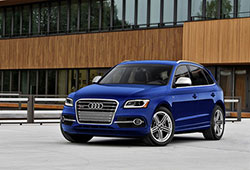

123萬美元落槌 福特《Ford Apollo Edition Mustang》順利售出 23萬美元落槌
223萬美元落槌 福特《Ford Apollo Edition Mustang》順利售出 23萬美元落槌

323萬美元落槌 福特《Ford Apollo Edition Mustang》順利售出 23萬美元落槌
423萬美元落槌 福特《Ford Apollo Edition Mustang》順利售出 23萬美元落槌
523萬美元落槌 福特《Ford Apollo Edition Mustang》順利售出 23萬美元落槌